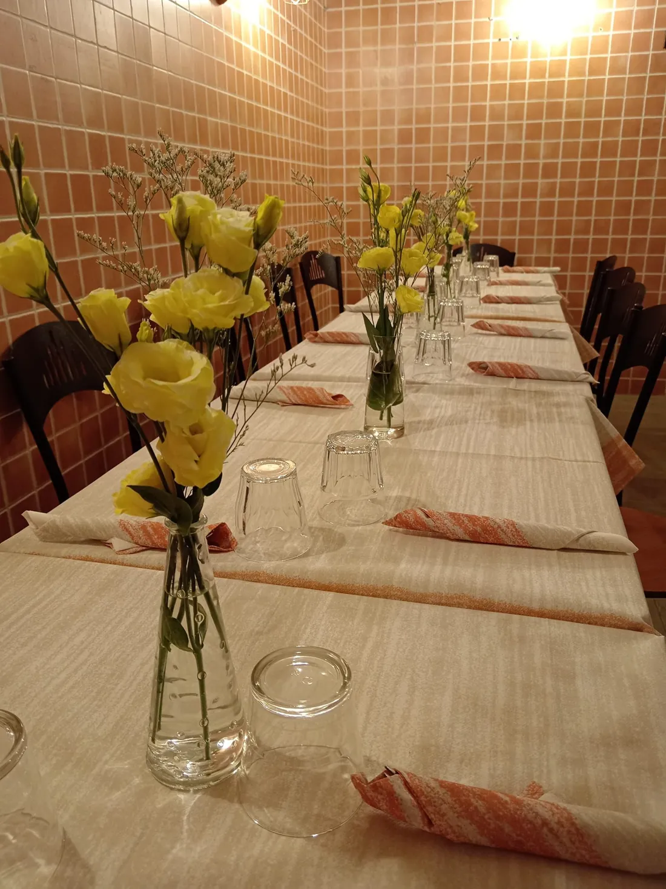

La nostra storia
Vito e Angela, una famiglia e un forno. Da oltre vent'anni la stessa idea: ingredienti semplici, scelti uno per uno.
- 1985
A 14 anni Vito si iscrive all'Istituto Alberghiero A. Perotti di Bari. Poi la gavetta nei ristoranti e nelle sale ricevimenti di Bari e provincia, dove impara a scegliere le materie prime: dalle farine a tutto il resto.
- 2001
Il 26 ottobre, con la moglie Angela, apre L'Antico Arco: un piccolo locale accanto alla vecchia porta di Cellamare, nato come pizzeria e rosticceria d'asporto con servizio a domicilio.
- 2007
Il trasferimento nella nuova sede, con una saletta climatizzata da 32 posti. Arrivano le farine biologiche, le birre artigianali a km 0 e i presìdi Slow Food.
- 2011
Nasce il laboratorio dedicato al senza glutine: pizze classiche e speciali, prodotti e patate fritte in olio extravergine d'oliva.
- 2015
Vito entra nella N.I.P., la Nazionale Italiana Pizzaioli, come istruttore. All'Expo partecipa con altri 69 colleghi al Guinness World Record della pizza più lunga del mondo: 1595,45 metri.
- 2024
Arrivano gli spaghetti all'assassina, le pucce e le piadine autoprodotte, accanto alle pizze vegane e senza glutine.
- Oggi
Dodici impasti diversi, un menu vegano, il pomodoro nickel free per chi è intollerante ai metalli pesanti. E la stessa voglia di stupirvi.


«Il buon cibo è il fondamento della vera felicità.»
Auguste Escoffier, la frase che ci accompagna